Puntos técnicos de este artículo


¿Cadena exprés? Querrás decir blockchain, ¿verdad?
Para explicar blockchain claramente, primero contemos una historia.
Seguro que has oído la historia de "tres personas crean un tigre", ¿no?
SupongamosUna personate dice: "¡Algo malo! Hay un tigre en la calle". ¿Le crees?
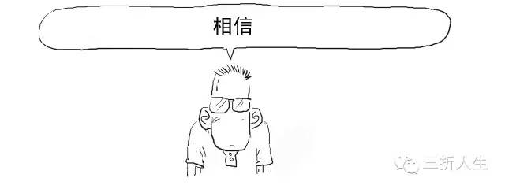
¡Vaya! ¿Por qué no sigues el guion? ¡Tenías que decir que no le crees!

¡Reiniciemos! ¡Hablábamos de un tigre de verdad!
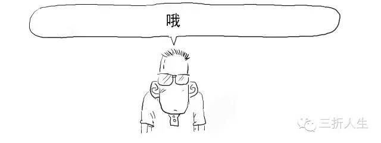
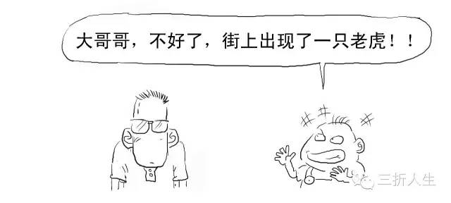
¡Bien! ¡¡Muy bien!! ¡¡¡Una actuación de nivel Oscar!!!
Continuemos, ahora cambiamos aun montón de personasque te dicen esto.
Cambiemos de escenario otra vez.
Si un anciano respetado y de gran integridad, en quien confías plenamente, te dijera esto, ¿qué pensarías?
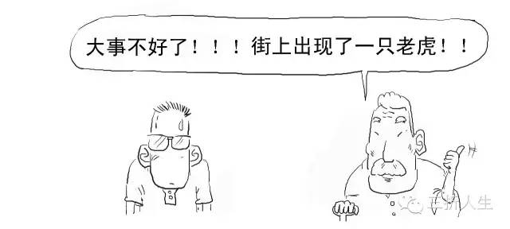
Sí, este es el llamado poder de la confianza. No confías en un individuo aislado que no tiene suficiente credibilidad, pero confías enun grupo de individuosoun individuo aislado con suficiente credibilidad。
En la sociedad real, el banco es ese individuo (centro) con suficiente credibilidad.

Alipay también tiene una función similar.

Pero utilizar bancos, Alipay, etc. como intermediarios de confianza requiere costos, y el público en general tenemos que pagar por estos enormes costos de confianza. Por eso la industria financiera es la más rentable, y Ant Financial, propietario de Alipay, tiene beneficios asombrosos.


¿Eliminar el respaldo crediticio de instituciones centralizadas como los bancos?

Entonces podemos usar lo que mencionamos antes:un grupo de individuos, y ese es el núcleo de la tecnología blockchain.
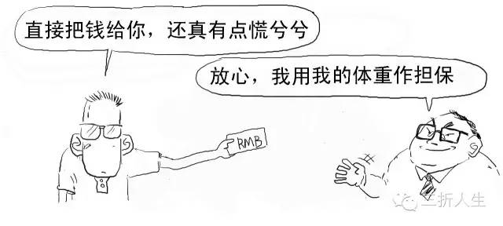

Blockchain es esencialmente una solución técnica para resolver problemas de confianza y reducir costos de confianza, con el objetivo de descentralizar y eliminar intermediarios de confianza.
Blockchain es la tecnología subyacente de Bitcoin.
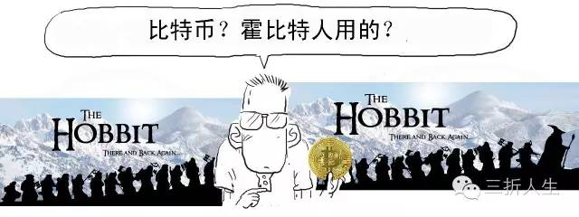
El concepto de Bitcoin (BitCoin) fue propuesto inicialmente por Satoshi Nakamoto en 2009. Puedes entenderlo simplemente como una moneda digital.
Tomemos las transacciones de Bitcoin como ejemplo para ver cómo funciona blockchain en concreto.
1. Transmitir cada transacción a toda la red. Para que toda la red la reconozca como válida, debe difundirse a cada nodo.


2. Cuando los nodos mineros reciben la información de la transacción, deben sacar su libro de contabilidad y registrar dicha transacción.

Una vez registrada, es irrevocable y no puede destruirse arbitrariamente.
Los nodos mineros confirman las transacciones mediante el software de Bitcoin que se ejecuta en sus computadoras.
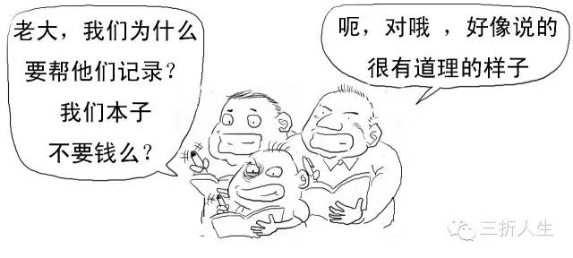
Para incentivar el servicio de los mineros, por las transacciones que registran y confirman, el sistema otorga 25 bitcoins como recompensa. (Esta cantidad de recompensa está configurada por el sistema para reducirse a la mitad cada 4 años).

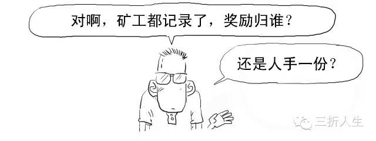
Solo hay una recompensa, así que se trata de ver quién registra más rápido.
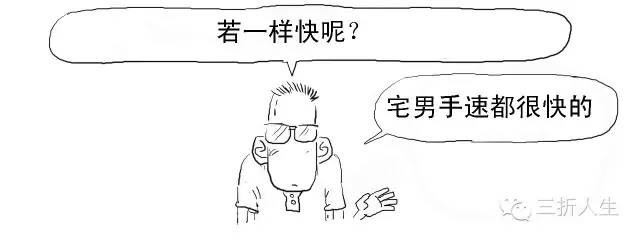
Para reducir esta situación, el sistema plantea un problema de cómputo de diez minutos. Quien resuelva el valor más rápido obtendrá el derecho de registrar la transacción y ganará la recompensa.


Por cierto, aquí podemos mostrarles un problema de cálculo que se dice que es del examen de jardín de infantes a primaria del distrito de Xuhui.

No te apures, inténtalo. Yo, la primera vez, la verdad es que lo hice mal.
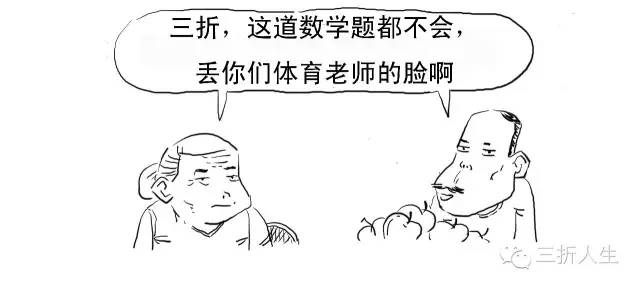
%&*%#@%, bueno, no puedo refutarlo.
Pueden escribir el resultado del cálculo en los comentarios. La respuesta se publicará en el próximo número.
Me desvié, volvamos al tema.
El algoritmo utilizado en blockchain antes mencionado no es un simple problema de cálculo, sino que usa el algoritmo de hash (Hash).

El hash es una técnica clásica en criptografía que se puede usar para verificar si alguien ha alterado el contenido de los datos.
3. El minero que obtiene el derecho de contabilidad transmitirá la transacción a toda la red, el libro de contabilidad será público, y los demás mineros verificarán y confirmarán estas cuentas.
Cuando la transacción obtiene más de 6 confirmaciones, se registra con éxito en el expediente.

Al registrar, el minero también coloca una marca de tiempo a la transacción, formando una cadena temporal completa.
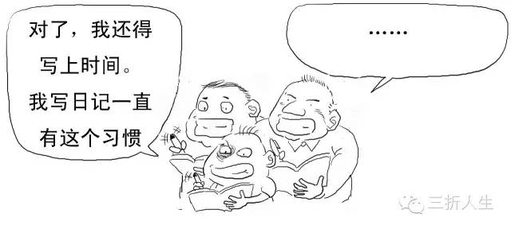
4. Cuando los demás mineros confirman que los registros del libro son correctos, el registro se considera legítimo y los mineros entran en la siguiente ronda de lucha por el derecho de contabilidad.

Cada registro del minero es un bloque (block), con una marca de tiempo. Cada bloque recién generado avanza estrictamente en orden cronológico lineal, formando una cadena (chain) irreversible, por eso se llama blockchain (Blockchain).

Además, cada bloque contiene el valor hash del bloque anterior, lo que garantiza que los bloques se conecten en orden temporal sin ser alterados.


En este punto, si volvemos a mirar la definición original de blockchain, podemos entenderla: blockchain es una base de datos distribuida, una serie de bloques de datos generados y relacionados mediante métodos criptográficos. Cada bloque contiene la información de una transacción de red, para verificar la validez de su información y generar el siguiente bloque.

Si dos personas suben al mismo tiempo, aunque la probabilidad es muy pequeña, si ocurre, vemos cuál de las cadenas de bloques finales es más larga; la más corta queda invalidada. Este es el "problema del doble gasto" en blockchain (gastar el mismo dinero dos veces).
En cuanto a la creación de transacciones falsas, a menos que convenzas a más del 51% de los mineros de toda la red para que modifiquen una determinada cuenta, tu alteración será inválida.

Cuantas más personas participen en la red, menor será la posibilidad de falsificación.
Esta es también la ventaja del mantenimiento y supervisión colectivos: el costo de la falsificación se maximiza.
Convencer al 51% de las personas para cometer fraude es todavía muuuuy difícil.

Sí.
Bien, resumamos. Blockchain tiene principalmente los siguientes contenidos clave:
1. Descentralización
Esta es la característica disruptiva de blockchain: no existe ninguna institución central ni servidor central; todas las transacciones ocurren en las aplicaciones cliente instaladas en la computadora o el teléfono de cada persona. Logra una interacción directa de punto a punto, lo que ahorra recursos, hace que las transacciones sean autónomas y simples, y elimina el riesgo de ser controlado por intermediarios centralizados.

2. Apertura
Blockchain puede entenderse como una solución técnica de contabilidad pública. El sistema es completamente abierto y transparente; el libro de contabilidad es público para todos, logrando compartir datos, y cualquiera puede auditar las cuentas.
El efecto de apertura es similar a esto:
3. Irrevocabilidad, inmutabilidad y seguridad criptográfica
Blockchain utiliza un algoritmo hash unidireccional. Cada bloque recién generado avanza estrictamente en orden cronológico lineal. La irreversibilidad e irrevocabilidad del tiempo hacen que cualquier intento de invadir o alterar los datos de blockchain sea fácil de rastrear, y lleva a ser rechazado por otros nodos. El costo de la falsificación es extremadamente alto, lo que puede limitar los comportamientos ilegales relacionados.
Autor original: 三折人生
URL original: http://if.pedaily.cn/news/201608/20160830161298426.shtml